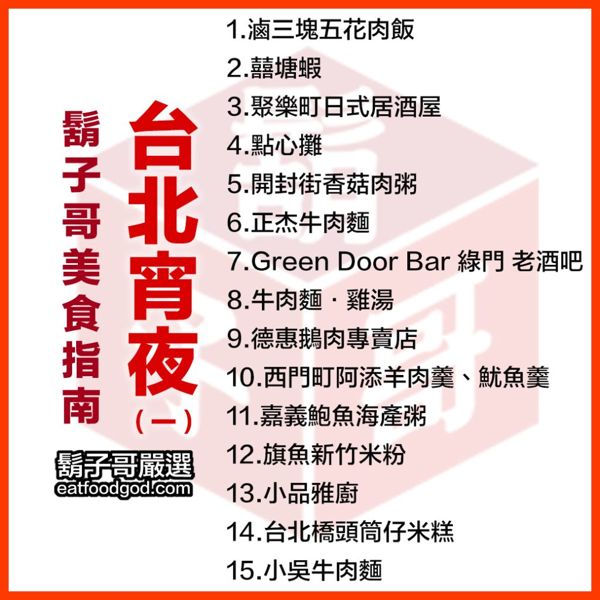

食神鬍子哥｜台北宵夜 15 家清單（一）：北投、萬華、中山、大同深夜食堂索引
來源是 eatfoodgod / 食神鬍子哥 2025-07-01 文章〈台北宵夜 – (一)〉，2026-06-01 更新。原文整理「15 家最常吃的台北宵夜第一篇」，順序非喜好排名。這篇適合收進「生活雷達／台北宵夜」：不是單店食記，而是夜貓族可按區域與收店時間快速篩選的索引。

一句話摘要
這份清單橫跨北投、萬華、中山、大安、大同等區，主題從五花肉飯、香菇肉粥、牛肉麵、鵝肉、羊肉羹、海產粥、米粉湯、筒仔米糕到酒吧炸雞。若欒帥半夜在台北臨時想吃東西，可以先用「所在區域 + 還開到幾點」篩選，再用 Google Maps 確認當日營業。
15 家台北宵夜清單
| # | 店名 | 地址 | 原文深夜營業描述 | 筆記 |
|---|---|---|---|---|
| 1 | 滷三塊五花肉飯 | 台北市北投區承德路七段100號 | 開到半夜2點 | 北投/石牌宵夜，五花肉飯、乾煎虱目魚肚。 |
| 2 | 囍塘蝦 | 台北市中山區民生東路二段65號 | 營業到半夜2點 | 中山區深夜熱炒/蝦料理，文中特別提煎豬肝。 |
| 3 | 聚樂町日式居酒屋 | 台北市萬華區武昌街二段99號 | 營業到半夜2點 | 西門町邊緣地帶居酒屋，生蠔與多道下酒菜。 |
| 4 | 點心攤 | 台北市萬華區萬大路196號 | 營業到半夜2點半 | 萬華西區宵夜，香菇肉粥、小菜、炸物與五味醬。 |
| 5 | 開封街香菇肉粥 | 台北市萬華區開封街二段86號 | 開到半夜3點 | 萬華人的深夜香菇肉粥記憶。 |
| 6 | 正杰牛肉麵 | 台北市萬華區東園街60號 | 營業到半夜3點 | 榨菜肉絲麵、豬耳朵、免費冰紅茶。 |
| 7 | Green Door Bar 綠門 老酒吧 | 台北市中山區德惠街6-1號1樓 | 開到半夜3點 | 酒吧但炸雞很強，適合炸雞配酒。 |
| 8 | 牛肉麵．雞湯 | 台北市大安區敦化南路一段164號 | 營業到凌晨3點半 | 東區市中心深夜牛肉麵/雞湯/滷味。 |
| 9 | 德惠鵝肉專賣店 | 台北市中山區錦州街36號 | 營業到半夜3點半 | 中山區深夜鵝肉、熱炒與湯品。 |
| 10 | 西門町阿添羊肉羹、魷魚羹 | 台北市萬華區峨眉街111-2號 | 賣到半夜4點 | 西門町宵夜，羊肉羹、魷魚羹與切盤。 |
| 11 | 嘉義鮑魚海產粥 | 台北市大同區延平北路三段77號 | 開到凌晨4點半 | 延三夜市/大同區海產粥與四破魚。 |
| 12 | 旗魚新竹米粉 | 台北市大同區延平北路三段85號 | 開到早上5點 | 米粉湯、小菜、魚丸，可加湯。 |
| 13 | 小品雅廚 | 台北市中山區中原街130號 | 開到凌晨5點 | 深夜白粥與各式小菜。 |
| 14 | 台北橋頭筒仔米糕 | 台北市大同區延平北路三段22-5號 | 約半夜12:40開到隔天中午 | 凌晨/早餐型筒仔米糕、豬血湯。 |
| 15 | 小吳牛肉麵 | 台北市萬華區洛陽街45-11號 | 24小時營業 | 西門/北門牛肉麵，鳳爪、加湯、生蒜頭。 |
分區使用法
- 北投 / 石牌：滷三塊五花肉飯。適合北投、石牌、承德路沿線半夜想吃飯類或魚肚。
- 萬華 / 西門：聚樂町、點心攤、開封街香菇肉粥、正杰牛肉麵、西門町阿添、小吳牛肉麵。這一區選擇最多，從粥、牛肉麵到羹湯都有。
- 中山區：囍塘蝦、Green Door Bar、德惠鵝肉、小品雅廚。適合半夜想吃熱炒、鵝肉、酒吧炸雞或白粥小菜。
- 大安 / 東區：牛肉麵．雞湯。適合東區中心點不知道吃什麼時的穩定選項。
- 大同 / 延三夜市：嘉義鮑魚海產粥、旗魚新竹米粉、台北橋頭筒仔米糕。適合凌晨到清晨的米粉湯、海產粥與米糕路線。
封面 OCR / 圖片描述
封面是白底紅框的清單型設計，左側大字寫「鬍子哥美食指南」「台北宵夜（一）」，下方有 eatfoodgod.com；右側列出 15 家店名：滷三塊五花肉飯、囍塘蝦、聚樂町日式居酒屋、點心攤、開封街香菇肉粥、正杰牛肉麵、Green Door Bar 綠門 老酒吧、牛肉麵．雞湯、德惠鵝肉專賣店、西門町阿添羊肉羹/魷魚羹、嘉義鮑魚海產粥、旗魚新竹米粉、小品雅廚、台北橋頭筒仔米糕、小吳牛肉麵。
本文已本地保存封面與原文多張店家代表圖片；其中原文有一張衛生紙廣告圖，未作為主要美食圖片引用。
來源與查核
原文提供 15 家店名、地址與深夜營業描述。本文另外用 Brave Search 抽查三個代表點：
- 滷三塊五花肉飯：多篇食記一致標示台北市北投區承德路七段 100 號、電話 02-2828-9388，營業至深夜，常見週日公休。
- 台北橋頭筒仔米糕：多篇食記標示台北市大同區延平北路三段 22-5 號，常見凌晨開到中午，週四公休或時段略有差異。
- 小吳牛肉麵：多篇食記標示台北市萬華區洛陽街 45-11 號，24 小時營業，靠近西門/北門牛肉麵聚落。
未逐一即時查核 15 家所有營業時間；宵夜店的公休日、售完時間、價格與臨時休息變動很大，出發前務必查 Google Maps、店家粉專或電話確認。
收進生活雷達的理由
這篇是「夜間決策」清單：半夜不是要慢慢讀食記，而是快速知道哪一區還有飯、麵、粥、熱炒、酒吧炸雞或清晨米粉湯可選。最實用的使用方式是把它當作台北深夜動線索引，再依當下位置與營業時間決定。
原始連結
https://eatfoodgod.com/eating-guide/taipei-midnight-snack-1/